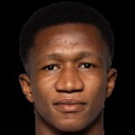

 Rahimo FC · Faso Foot Ligue 1 · 2026/27
Rahimo FC · Faso Foot Ligue 1 · 2026/27Cheick ChabaneCAMARA
Le joueur en un coup d'œil
Cheick Chabane Camara évolue à Rahimo FC : 7 match(s), 383 minute(s), 4 but(s) et 0 passe(s) décisive(s) cette saison en Faso Foot Ligue 1.
Positionnement parmi les attaquants de la ligue
Comparaison avec 55 joueurs du même poste (≥ 3 matchs, ≥ 180 min). 100 = meilleur de la ligue.
Pourquoi le recruter ?
Synthèse méthodique pour dirigeants et recruteurs : chaque constat s'appuie sur les données réelles du championnat.
Le test du recruteur : 5 questions
Une méthode simple pour décider : chaque question reçoit un feu vert, orange ou rouge, calculé sur les chiffres réels.
💡 Conseil du recruteur : un bon dossier = il joue + il fait gagner des points + il est discipliné + on l'a vu jouer.
Points forts
- ⚽ 4 but(s) en 7 match(s) : une présence constante devant le but.
- ⏱️ 383 minutes jouées : un échantillon suffisant pour juger son niveau.
- 🌱 20 ans : une marge de progression importante.
- 🏅 Parmi les meilleurs attaquants de la ligue en buts et passes décisives (top 10 %).
Ce qu'il apporte à votre équipe
- 🎯 Poste de finition : transforme les situations en buts.
- 🌳 Un investissement à moyen terme : il peut progresser avec le projet.
- 🥅 Des buts supplémentaires : il peut débloquer les rencontres serrées.
Points de vigilance
- ℹ️ Pied fort : non communiqué, à demander au club.
Poste idéal et système où il brille
Lecture tactique calculée à partir des données du joueur (gabarit, buts, passes, zones occupées, vitesse, passes réussies) : le rôle le plus cohérent avec son profil, et les schémas qui le servent le mieux.
Renard des surfaces
Brille en 4-4-2 (en duo, avec un partenaire qui décroche) et en 4-3-3 (neuf de référence servi par deux ailiers) : il a besoin de ballons dans la surface.
Ce qui l'indique
- Efficacité devant le but : 0.94 but(s) par 90 min
Autres rôles envisageables
Où il joue : son plateau tactique en 3D
Le joueur (colonne dorée) à son poste idéal « Renard des surfaces », dans les systèmes qui le servent le mieux. Choisissez un système, faites pivoter le terrain, zoomez à la molette.
Les clubs du championnat qui ont le plus besoin de lui
Classement par ordre de besoin pour le profil « Renard des surfaces » : lacunes du poste (attaque, défense, création, profondeur d'effectif, âge) et absence de ce profil dans l'effectif.

- Attaque n°16 sur 16 (0.43 but(s) par match)
- Profondeur d'effectif limitée : 0 joueur(s) à temps de jeu significatif
- Aucun profil « Renard des surfaces » dans l'effectif

- Attaque n°13 sur 16 (0.71 but(s) par match)
- Aucun profil « Renard des surfaces » dans l'effectif

- Attaque n°15 sur 16 (0.57 but(s) par match)
- Aucun profil « Renard des surfaces » dans l'effectif

- Attaque n°14 sur 16 (0.71 but(s) par match)
- Aucun profil « Renard des surfaces » dans l'effectif

- Attaque n°10 sur 16 (1.0 but(s) par match)
- 50 % des buts du club viennent de Harissou Ouro-Bodi : dépendance à un seul buteur
Méthode : besoin = 55 % lacune du poste (buts marqués/encaissés, passes décisives, dépendance à un buteur, âge, profondeur) + 45 % absence du rôle dans l'effectif. Indicatif : ne remplace pas l'avis du staff.
Clubs étrangers dont l'effectif a besoin de son poste
Parmi 23 championnats (Europe et USA), clubs accessibles classés par besoin au poste « Attaquant » : blessés, effectif étroit, prêts, résultats.
- 2 blessé(s) à ce poste dont 2 de longue durée : Kingstone Mutandwa, David Datro Fofana
- Effectif étroit : 2 joueur(s) disponible(s) au poste (minimum conseillé 3)
- 2 joueur(s) à ce poste en fin de contrat d'ici juin 2027 : le club devra les remplacer
- 1 joueur(s) du poste prêté(s) à l'extérieur
- 3 blessé(s) à ce poste dont 2 de longue durée : Adeshina Ayodele, Keano Vanrafelghem, Bouke Boersma
- 2 joueur(s) à ce poste en fin de contrat d'ici juin 2027 : le club devra les remplacer
- 1 joueur(s) du poste prêté(s) à l'extérieur
- Gabarit type à ce poste : 172 cm en moyenne (le sien : 175 cm)
- 1 blessé(s) à ce poste dont 1 de longue durée : Israel Salazar
- Effectif étroit : 1 joueur(s) disponible(s) au poste (minimum conseillé 3)
- Gabarit type à ce poste : 178 cm en moyenne (le sien : 175 cm)
- Attaque n°18 sur 18 du championnat (0.5 but(s) par match)
- 2 blessé(s) à ce poste dont 2 de longue durée : Veton Berisha, Nick D'Agostino
- Effectif étroit : 2 joueur(s) disponible(s) au poste (minimum conseillé 3)
- Gabarit type à ce poste : 179 cm en moyenne (le sien : 175 cm)
- Style de jeu du club en adéquation avec son rôle
- 1 blessé(s) à ce poste dont 1 de longue durée : Archie Goodwin
- Effectif étroit : 2 joueur(s) disponible(s) au poste (minimum conseillé 3)
- Âge moyen des titulaires à ce poste : 21.7 ans (le sien : 20 ans)
- Style de jeu du club en adéquation avec son rôle
- 1 blessé(s) à ce poste dont 1 de longue durée : Franko Kovacevic
- Effectif étroit : 2 joueur(s) disponible(s) au poste (minimum conseillé 3)
- 1 joueur(s) à ce poste en fin de contrat d'ici juin 2027 : le club devra les remplacer
- Gabarit type à ce poste : 181 cm en moyenne (le sien : 175 cm)
Méthode : 20 % besoin du club à ce poste (résultats, blessés, effectif étroit) + 20 % besoin précis pour son profil (blessés, prêts, fins de contrat au poste exact) + 18 % gabarit (taille moyenne des titulaires du club à ce poste) + 14 % style de jeu du club (déduit de ses résultats) + 12 % âge moyen au poste + 16 % niveau du club / niveau estimé du joueur. Mineurs : bonus aux clubs à filière jeunes. Aucun plafond de valeur ; un club n'est proposé qu'à un nombre limité de joueurs par poste. Données publiques collectées le 2026-11-06
Les 4 graphiques du joueur
Quatre lectures du joueur, toujours calculées sur ses données réelles (aucun graphique illustratif).
Positionnement par poste (radar)
Centiles parmi les joueurs du même poste (100 = meilleur de la ligue). Gris : échantillon réduit, comparaison indicative.
Carte de chaleur vidéo
Zones occupées pendant le temps vu à l'écran, tous les matchs analysés cumulés (l'équipe attaque vers la droite).
Actions vidéo : passes, récupérations, tirs
Vert : passe réussie · rouge : passe ratée ou balle perdue · or : récupération · carré : duel · disque rouge : tir. Matchs analysés cumulés.
Parcours de la saison
Présence (titulaire / entré en jeu / banc), buts, passes décisives, cartons et résultat de chaque journée.
Analyse scouting personnalisée
Rédigée à partir des données réelles du joueur : feuilles de match, comparaison avec les joueurs du même poste et analyse vidéo quand elle existe. Aucune appréciation n'est inventée.
Profil et utilisation
- Cheick Chabane Camara : Attaquant à Rahimo FC, 20 ans, n°20.
- Utilisation : alterne titularisations et entrées en jeu (4 titularisation(s) sur 7 match(s), 383 minutes).
Rendement
- Rendement : 4 but(s) et 0 passe(s) décisive(s) en 7 match(s), soit 0.94 implication(s) dans les buts par 90 minutes.
- Parmi les attaquants de la ligue ayant au moins 3 matchs et 180 minutes, l'implication dans les buts se situe au 90ᵉ centile (100 = meilleur).
- Forme récente : 1 but(s) et 0 passe(s) décisive(s) sur les 3 dernier(s) match(s) joué(s).
Discipline
- Discipline : 1 carton(s) jaune(s) et 0 rouge(s), soit 0.23 carton(s) pondéré(s) par 90 minutes.
- Niveau de discipline : 19ᵉ centile parmi les attaquants de la ligue (100 = le plus discipliné).
Lecture vidéo
- Lecture vidéo sur 1 match(s) analysé(s), 1 min 22 s de temps vu à l'écran : valeurs approchées.
- Vitesse de pointe observée : 19.9 km/h ; 0 sprint(s) et 0 repli(s) défensif(s) vus.
- Rythme : 202 m parcourus pendant le temps vu, soit 147 m par minute vue.
- Jeu de passe : 0 passes réussies sur 1 (0 % de réussite), 0 passe(s) clé(s).
- Impact défensif : 0 récupération(s), 1 balle(s) perdue(s), 0 duel(s) gagné(s) sur 0.
- Zones occupées : surtout le tiers défensif (59 % du temps vu), dans le axe central (68 %).
Points forts factuels
- Efficacité devant le but : 4 but(s) en 383 minutes.
- Niveau d'implication dans le meilleur quart des attaquants de la ligue.
- Jeune profil (20 ans) déjà utilisé en championnat.
À confirmer
- Pied fort : non renseigné, à vérifier directement avec le club ou le joueur.
- Les minutes exactes des titulaires remplacés ne sont pas publiées : le temps de jeu par match est approximatif.
Recommandation de suivi
- Revoir le match complet de la J2 contre CFFEB : ▶ Odysee.
- Pour un contact ou une demande d'information : écrire à RSM Agency par WhatsApp.
Rendement sur la saison
Titulaire dans 4 des 7 match(s) observés sur les feuilles de match.
Journal des matchs 2026/27
Rôle, minutes, buts, passes et cartons match par match, avec les liens vers le Match Tracker et le match complet quand l'un des clubs suivis par RSM Agency est concerné.
| J | Date | Adversaire | Score | Rôle | Min | B | PD | Cartons | Liens |
|---|---|---|---|---|---|---|---|---|---|
| J7 | AS Maya | N 0–0 | Titulaire | — | Fiche du match | ||||
| J6 | AS SONABEL | V 1–0 | Titulaire | — | Fiche du match | ||||
| J5 |  Sporting Cascades Sporting Cascades | V 3–1 | Titulaire | — | 1 | 🟨 | Fiche du match | ||
| J4 |  FocuSport FC FocuSport FC | V 1–4 | Titulaire | — | 3 | Fiche du match | |||
| J3 |  AS Douanes AS Douanes | D 1–2 | Entré en jeu | 46′→ | Fiche du match | ||||
| J2 |  CFFEB CFFEB | V 1–2 | Entré en jeu | 64′→ | Fiche du match · Match Tracker RSM · Match complet ▶ | ||||
| J1 |  Real du Faso Real du Faso | V 2–1 | Entré en jeu | 79′→ | Fiche du match · Match Tracker RSM · Match complet ▶ |
Vidéos, highlights et matchs complets
Liens YouTube trouvés par recherche (titre et chaîne affichés ; aucune vidéo n'est copiée) et matchs complets de RSM Agency.
Ses matchs : résumés et matchs complets
| J6 | AS SONABEL | Résumé YouTube |
| J4 | FocuSport FC | Résumé YouTube |
| J2 | CFFEB | Match complet ▶ · Match Tracker RSM |
| J1 | Real du Faso | Résumé YouTube · Résumé YouTube · Match complet ▶ · Match Tracker RSM |
Game Tracker : analyse vidéo match par match
Mesures issues de l'analyse vidéo des matchs de Real du Faso, CFFEB et USFA et de leurs adversaires : valeurs approchées, calculées sur le temps où le joueur est visible à l'écran.
J2 · CFFEB
Valeurs approchéesParcours et statistiques de carrière
Parcours
Sélections et compétitions internationales
| Saison | Compétition | Équipe | M | B | PD | Min | CJ |
|---|---|---|---|---|---|---|---|
| 2023 | TotalEnergies U-17 Africa Cup of Nations | BFA | 4 | 0 | 0 | 250 | 1 |
| 2023 | FIFA U-17 World Cup | BFA | 3 | 0 | 0 | 70 | 0 |
Statistiques par compétition (championnat et coupes)
| Saison | Compétition | Équipe | M | B | PD | Min | CJ |
|---|---|---|---|---|---|---|---|
| 2026/2027 | FasoFoot Ligue 1 | RAH | 6 | 4 | 0 | 293 | 1 |
| 2026 | Super Coupe AJSB | RAH | 1 | 0 | 0 | 8 | 0 |
| 2026 | Coupe du Faso | RAH | 0 | 0 | 0 | 0 | 0 |
| 2025/2026 | TotalEnergies CAF Champions League | RAH | 2 | 0 | 0 | 47 | 0 |
| 2025/2026 | FasoFoot Ligue 1 | RAH | 19 | 2 | 0 | 637 | 2 |
| 2025 | Super Coupe AJSB | RAH | 0 | 0 | 0 | 0 | 0 |
| 2025 | Coupe du Faso | VIT | 2 | 2 | 0 | 95 | 0 |
| 2024/2025 | FasoFoot Ligue 1 | VIT | 18 | 0 | 0 | 446 | 1 |
| 2024 | Coupe du Faso | VIT | 2 | 0 | 0 | 112 | 0 |
| 2023/2024 | Ligue 1 Lonab | VIT | 12 | 0 | 0 | 537 | 1 |
| 2022/2023 | Ligue 1 Lonab | VIT | 17 | 1 | 0 | 467 | 0 |
Profil export : âge, visa et permis de travail
Les clubs européens suivent volontiers les joueurs de 16 à 19 ans qui progressent vite. Ce qui compte pour eux : l'âge, le droit de signer, la nationalité et l'expérience internationale.
À 20 ans, l'intérêt dépend désormais surtout de la régularité, des statistiques et de l'expérience internationale.
Un joueur burkinabè majeur a besoin d'un visa et d'un permis de travail, délivrés selon les règles propres à chaque pays (le club sponsor la demande). Le Royaume-Uni applique un système à points (GBE) où les sélections internationales comptent.
Aucune sélection nationale n'est recensée : une convocation ou un tournoi de jeunes renforcerait le dossier.
Une double nationalité ou une ascendance européenne lèverait la contrainte de permis de travail : à vérifier avec le joueur et sa famille.
Indications générales à valider auprès de la fédération, d'un avocat du sport ou du club preneur : les règles changent selon le pays et la saison.
Identité et contexte
| Club | Rahimo FC |
| Poste | Attaquant |
| Numéro | 20 |
| Âge | 20 |
| Naissance | — |
| Nationalité | Burkina Faso |
| Taille | 175 cm |
| Pied fort | — |
Sources : feuilles de match de la Faso Foot Ligue 1, profils de carrière, analyse vidéo RSM Agency (valeurs approchées). Les champs « — » ne sont pas renseignés : aucune valeur n'est inventée. · Photo : fournisseur de données